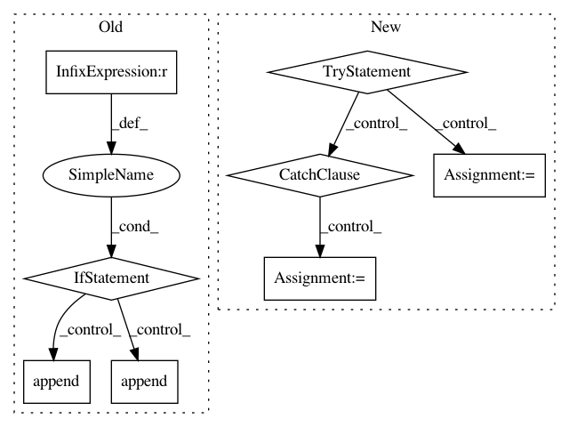

31be93ffb4abba92ada7a511a7cd7031df42279c,tests/testOpExportSlot.py,,,#,166
Before Change
assert opReorderAxes.Output.meta.shape == data.shape, "Exported files were of the wrong shape or number."
assert (opReorderAxes.Output[:].wait() == data.view( numpy.ndarray )).all(), "Exported data was not correct"
if __name__ == "__main__":
import sys
import nose
sys.argv.append("--nocapture") // Don"t steal stdout. Show it on the console as usual.
sys.argv.append("--nologcapture") // Don"t set the logging level to DEBUG. Leave it alone.
nose.run(defaultTest=__file__)
After Change
from lazyflow.operators.opReorderAxes import OpReorderAxes
from lazyflow.operators.ioOperators import OpInputDataReader, OpExportSlot, OpStackLoader
try:
import dvidclient
_skip_dvid = False
except ImportError:
_skip_dvid = True
class TestOpExportSlot(object):
@classmethod
def setupClass(cls):
In pattern: SUPERPATTERN
Frequency: 3
Non-data size: 8
Instances
Project Name: ilastik/ilastik
Commit Name: 31be93ffb4abba92ada7a511a7cd7031df42279c
Time: 2013-12-12
Author: bergs@janelia.hhmi.org
File Name: tests/testOpExportSlot.py
Class Name:
Method Name:
Project Name: ilastik/ilastik
Commit Name: 6ceb6c78418b099238edf5300706fa683bccbb10
Time: 2013-06-12
Author: webmaster@burgerdev.de
File Name: tests/testOpInterpMissingData.py
Class Name:
Method Name:
Project Name: NifTK/NiftyNet
Commit Name: 72e0907d7784f62157906818686da273ab6aa7ed
Time: 2018-09-11
Author: wenqi.li@ucl.ac.uk
File Name: niftynet/contrib/segmentation_bf_aug/segmentation_application_bfaug.py
Class Name: SegmentationApplicationBFAug
Method Name: initialise_dataset_loader